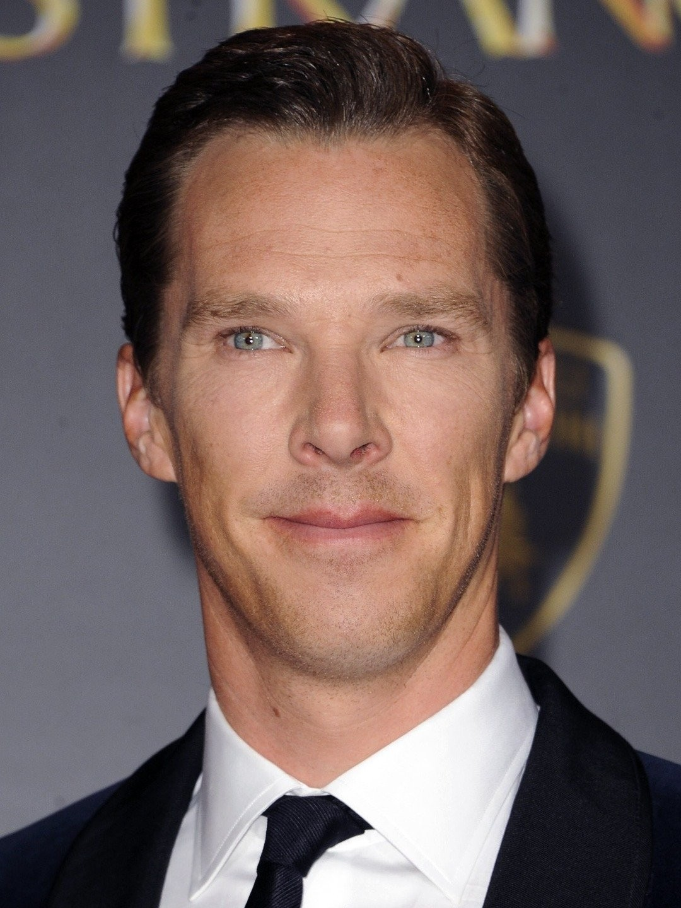
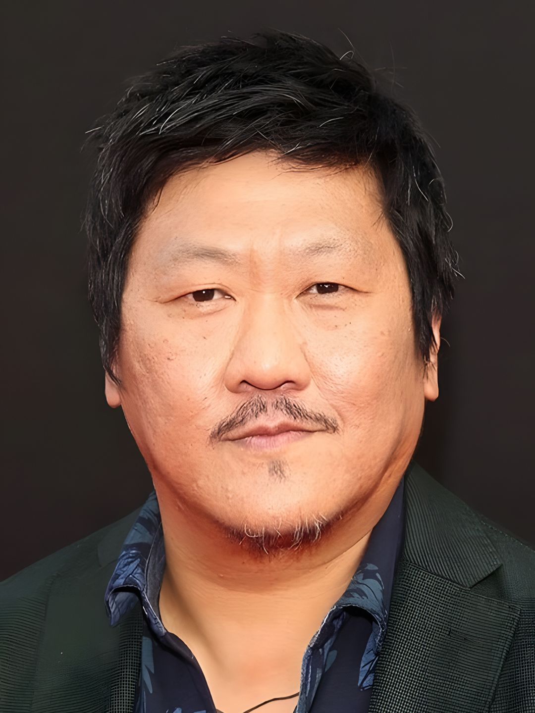
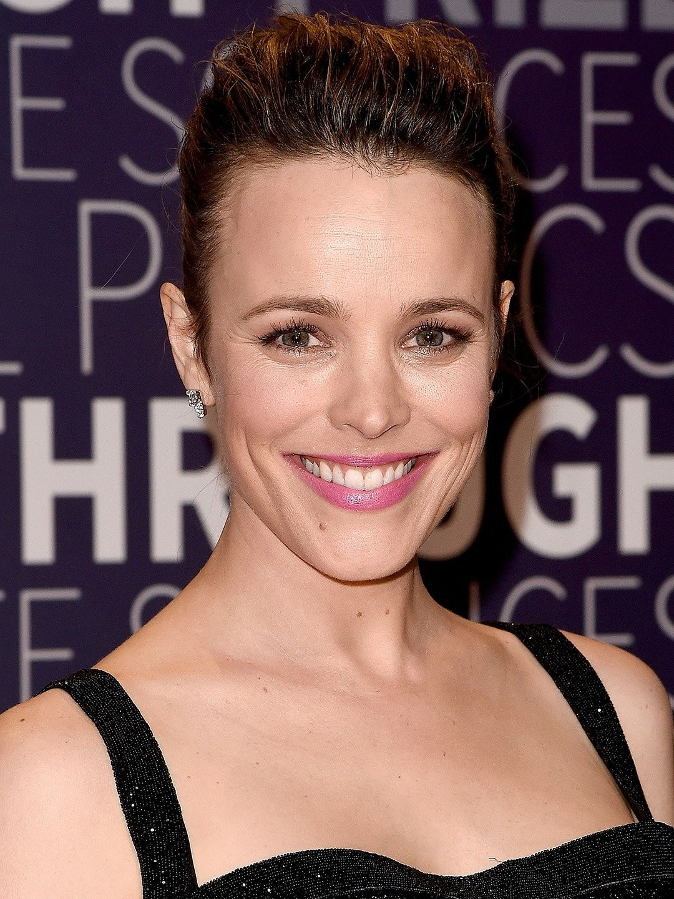
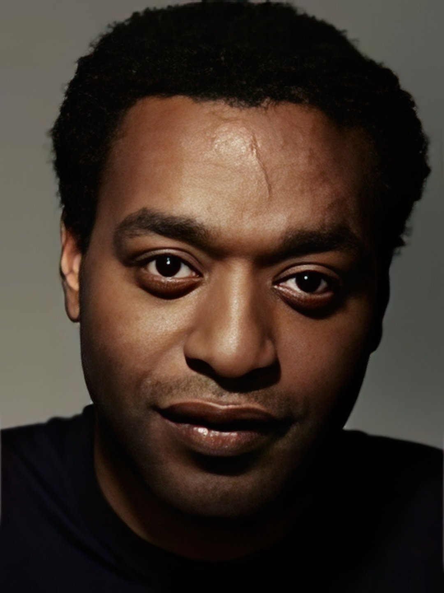
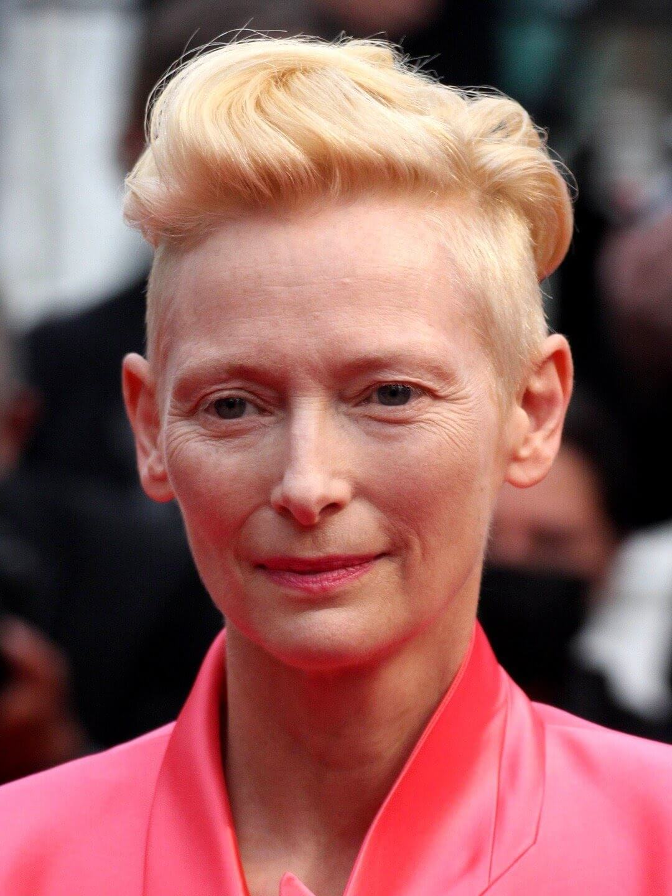
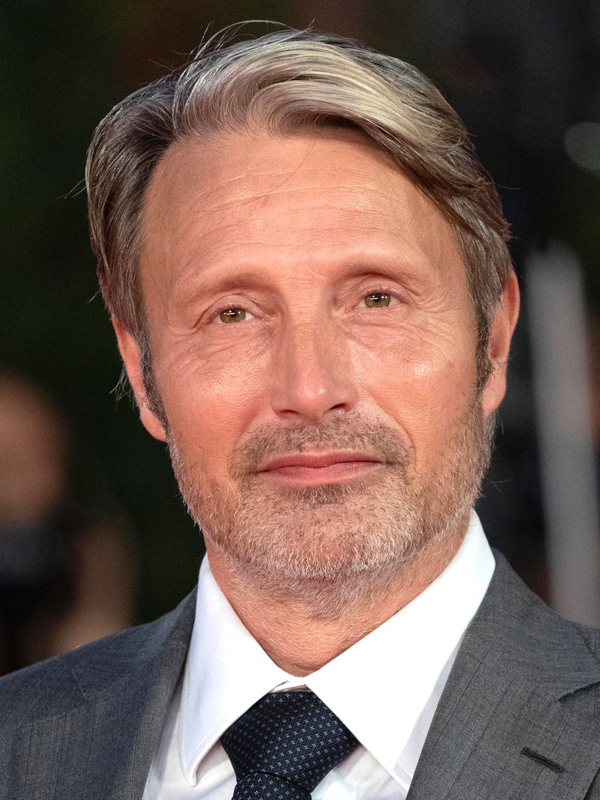

Actorii filmului "Doctor Strange"






Benedict Cumberbatch - Dr. Stephen Strange
Benedict Timothy Carlton Cumberbatch CBE (n. 19 iulie 1976, Greater London, Anglia, Regatul Unit) este un actor de teatru, radio, film, televiziune și producător englez, cunoscut pentru rolul lui Alan Turing din The Imitation Game, pentru care a fost nominalizat la Premiile Oscar, Globul de Aur, BAFTA și altele la categoria Cel mai bun actor. Un alt rol remarcabil recreat de acesta este cel de Sherlock Holmes în seria Sherlock sau cel de Stephen Strange in filmul Marvel Doctor Strange
Rachel McAdams - Christine Palmer
Rachel Anne McAdams s-a născut la London, Ontario, și a crescut în apropierea orașului St. Thomas. Rolul său de referință a fost cel din filmul Mean Girls, din anul 2004. A urmat o adaptare a filmului Jurnalul (film) și comedia Spărgătorii de nunți. Alte roluri au fost în filmele The Family Stone, Red Eye and The Time Traveler's Wife. În anul 2009 a jucat în filmul Sherlock Holmes (regizat de Guy Ritchie), în rolul Irene Adler, iar un an mai târziu în pelicula Morning Glory, în rolul Becky Fuller.
Tilda Swinton - Ancient One
Katherine Matilda Swinton (n. 5 noiembrie 1960) este o actriță britanică. Este cunoscută pentru interpretarea unor personaje excentrice și enigmatice, lucrând adesea cu regizori autori. A primit diverse distincții, inclusiv un Premiu Oscar și un Premiu BAFTA pentru film, precum și nominalizări pentru trei premii Globul de Aur. În 2020, The New York Times a clasificat-o printre cei mai mari actori ai secolului XXI.
Benedict Wong - Wong
Benedict Wong (n. 3 iulie 1971) este un actor englez. Și-a început cariera pe scenă înainte de a juca în filmul Dirty Pretty Things (2003), care i-a adus o nominalizare la Premiile British Independent Film, și în sitcomul BBC 15 Storeys High (2002–2004). Acestea au fost urmate de roluri în filmele On a Clear Day (2005), Sunshine, Grow Your Own (ambele în 2007) și Moon (2009), precum și în seria CBBC Spirit Warriors (2010).
Chiwetel Ejiofor - Karl Mordo
Chiwetel Umeadi Ejiofor (n. pe 10 iulie 1977) este un actor, scenarist și regizor britanic. A primit diverse distincții, inclusiv un premiu BAFTA pentru film și un premiu Laurence Olivier, în plus față de nominalizări la Premiul Oscar, două premii Primetime Emmy, trei premii ale Sindicatului Actorilor din America și cinci premii Globul de Aur. În 2008, a fost numit Ofițer al Ordinului Imperiului Britanic (OBE) de către Regina Elisabeta a II-a pentru serviciile aduse artelor. A fost avansat la rangul de Comandor al Ordinului Imperiului Britanic (CBE) în Onorurile de ziua de naștere din 2015
Mads Mikkelsen - Kaecilius
Mads Dittmann Mikkelsen (n. 22 noiembrie 1965) este un actor danez. A devenit cunoscut în Danemarca pentru rolurile sale, cum ar fi Tonny în primele două filme din trilogia Pusher (1996, 2004), sergentul detectiv Allan Fischer în serialul TV Rejseholdet (2000–2004), Niels în Open Hearts (2002), Svend în The Green Butchers (2003), Ivan în Adam's Apples (2005) și Jacob Petersen în After the Wedding (2006).